SALUD · NOTA
7 cosas que prueba la gente que trabaja parada para el dolor de pies (y la única que de verdad funcionó)
Zapatillas “cómodas” de $180.000, plantillas de gel, medias de compresión, baños de sal, un masajeador que terminó en un cajón… Hablamos con lectoras que hacen 8 a 12 horas de pie. Esto es lo que quedó en pie.
Si trabajás de pie —atención al público, enfermería, cocina, depósito, docencia, peluquería— seguro conocés la escena: a la hora 6 los talones empiezan a arder, a la 8 te duele hasta la espalda, y a la noche te sacás los zapatos y los pies siguen latiendo. Esta nota te va a ahorrar tiempo y plata: qué prueba casi todo el mundo, por qué casi nada dura, y qué hicieron distinto las personas que dejaron de contar las horas hasta poder sentarse.
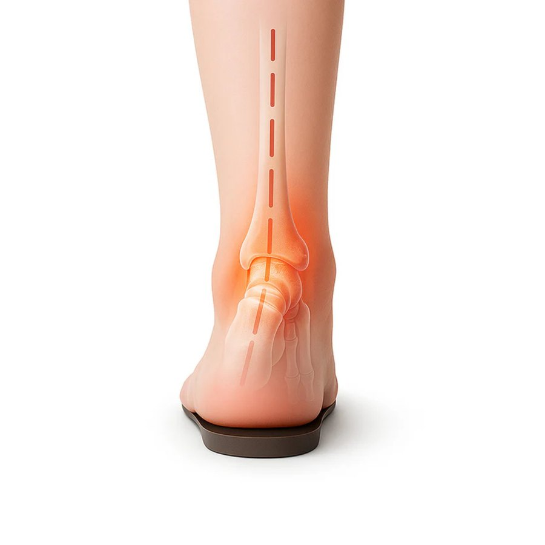
Lo que ya probaste
Seis fracasos. Una ganadora.
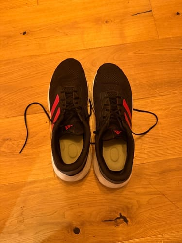
Entre las lectoras con las que hablamos, la lista se repite casi en el mismo orden: las zapatillas “de enfermera” de $180.000 que todas recomiendan. Plantillas de gel de la farmacia, de $15.000, que a las tres semanas quedan como una hoja de papel. Medias de compresión. El baño de agua caliente con sal todas las noches. El masajeador eléctrico de $90.000 que usaste dos semanas. Las plantillas a medida del podólogo, de $250.000 para arriba. Y más ibuprofeno del que te gustaría admitir, solo para llegar al fin de semana.
Todas tienen el mismo problema de fondo, y no es que vos lo hiciste mal: atacan el síntoma al final del día en vez del impacto que lo produce durante el día. Lo que sigue es la diferencia, punto por punto.
01El origen
Por qué a la hora 6 siempre duele
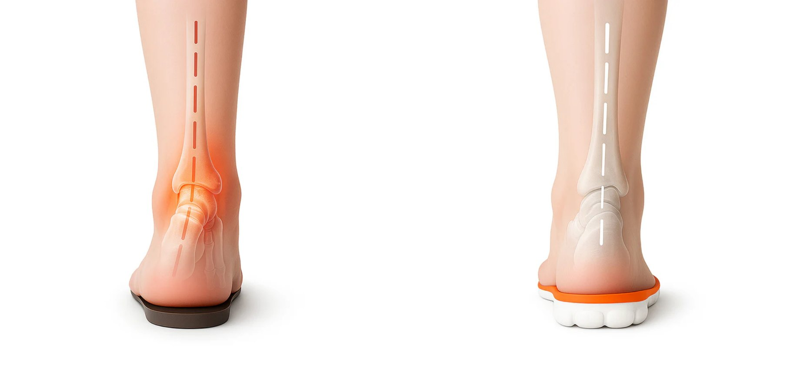
El piso duro no devuelve nada. Cerámica, cemento, porcelanato: cada paso manda la fuerza directo hacia arriba, por el talón. Cada apoyo carga más que tu peso completo, y un turno de 10 horas puede significar 15.000 apoyos. Sumalo y es más de mil toneladas de impacto en una jornada.
Sin una amortiguación real, tus pies son la zona de choque. Por eso el dolor no aparece a la mañana: se acumula, y explota a media tarde. Y por eso el baño de sal a la noche alivia pero no cambia nada: al otro día, los 15.000 apoyos vuelven a empezar.
02El error
La espuma muerta: por qué las plantillas de gel “no sirvieron”
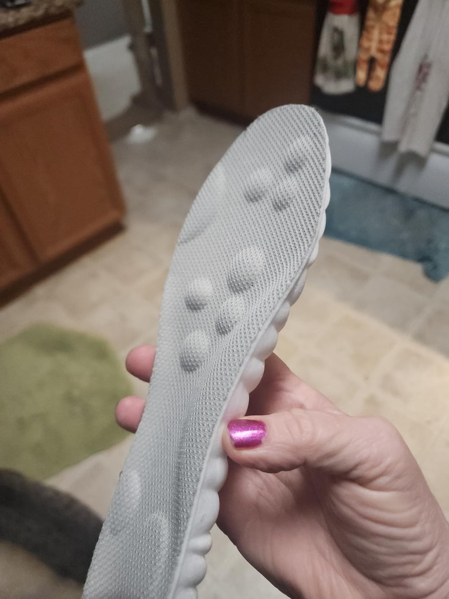
Las plantillas que se compran en la farmacia o en el kiosco son una sola capa de espuma blanda. Se sienten bien en el local. Se aplastan en dos o tres semanas. Y acá va lo que nadie te dice: la espuma aplastada no absorbe nada. A partir de la hora 4, esa plantilla es decoración.
Es el mismo problema de las zapatillas caras: amortiguan hasta que se vencen y, mientras tanto, no reequilibran el pie. Por eso tantas lectoras nos contaron lo mismo: “probé cuatro plantillas distintas y ninguna me duró un mes”.
03Lo que cambió
Cada paso se convirtió en un masaje suave
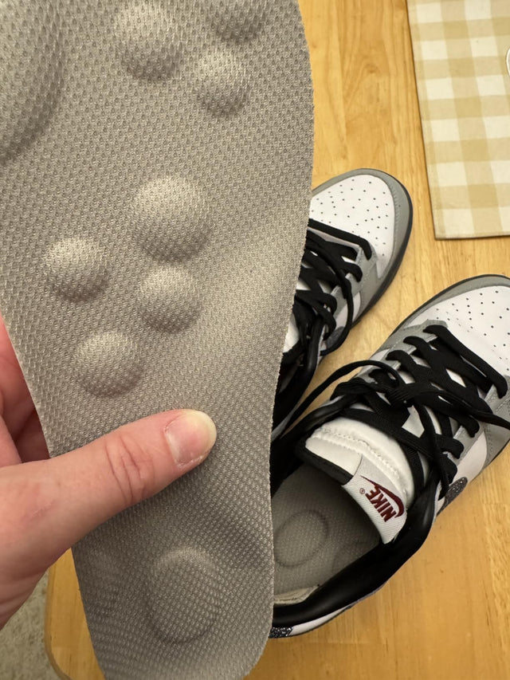
Lo que marcó la diferencia para la mayoría fue una plantilla argentina que se hizo viral en TikTok e Instagram este año: las Cloud-Comfy 5D. En vez de una capa blanda, tienen una superficie de relieves que se hunden y vuelven con cada paso, como dedos que presionan y sueltan, y reparten cada apoyo en toda la planta para que ningún punto se lleve el golpe solo.
Lo primero que cuenta la gente es la sensación: “como caminar sobre una nube”. Lo segundo, que los relieves van debajo de una capa acolchada, así que es presión suave, no pinchazos, incluso a la hora 10.
04El arco
El arco dejó de colapsar (y las mañanas dejaron de empezar con una puntada)
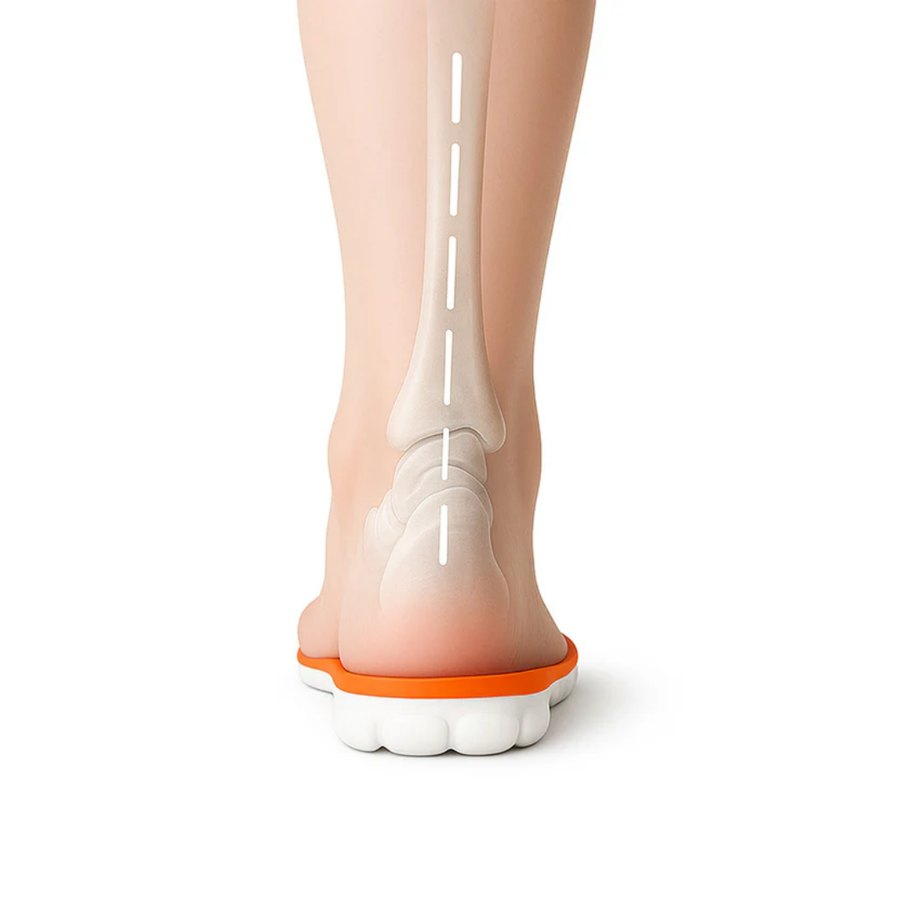
Si alguna vez te levantaste de la cama y el primer paso fue una puntada en el talón, conocés la fascitis plantar: la banda que sostiene el arco del pie se sobrecarga, se inflama y duele. Las plantillas planas no hacen nada con eso, porque el arco sigue colapsando bajo tu peso.
La Cloud 5D tiene un soporte de arco que mantiene el pie en posición neutra durante todo el día. Las lectoras con fascitis nos contaron el mismo recorrido: el día 1 se siente raro, al día 3 dejás de notarlas, y a las dos semanas llegás a la cocina antes de acordarte de que “tenías que” apoyar con cuidado.
05La prueba
“Dejé de contar las horas hasta poder sentarme”
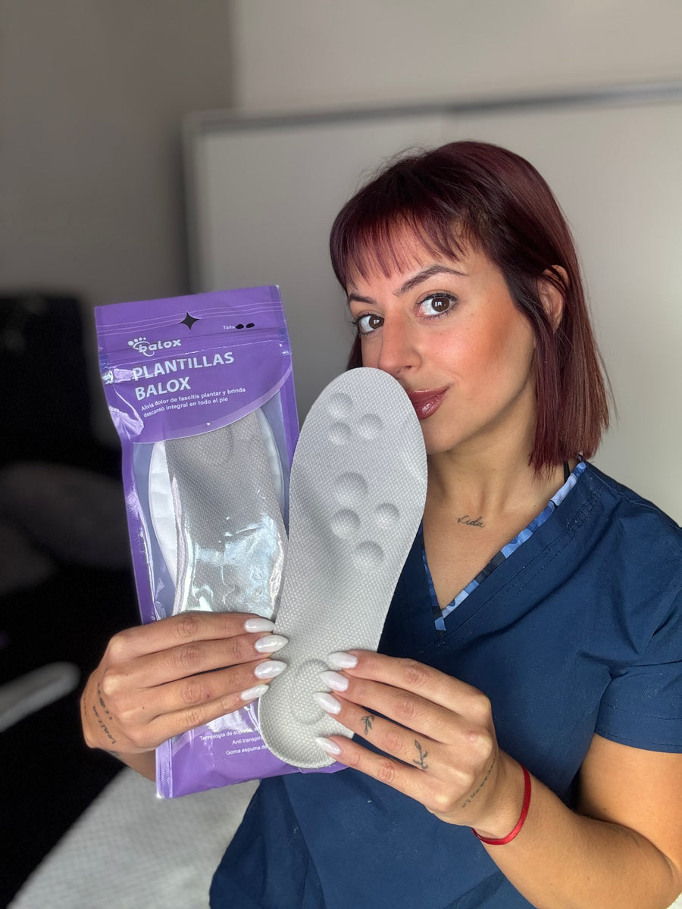
Durante años, todo el turno giraba alrededor de los pies: cuánto falta para el descanso, qué tan lejos quedó el auto, si hoy me toca piso de cerámica o de goma. Y un día, una lectora se dio cuenta de que no había contado. Hora 9 de una guardia de 12, parada desde el pase, y no había pensado en los pies ni una vez.
Esa es toda la prueba. No un estudio ni una promesa: la hora en que dejás de pensar en ellos.
★★★★★ 4,9/5 · +100.000 pares vendidos · Elegida por enfermeras, mozos y gente que trabaja parada
06El resto del cuerpo
No fueron solo los pies los que lo notaron
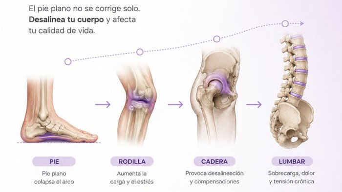
El impacto no se queda en el pie. Cada apoyo duro sube por el tobillo, la rodilla, la cadera y la zona lumbar; por eso un turno de 12 horas sobre cerámica te deja dolorida entera, no solo las plantas. Cuando el arco colapsa, la rodilla rota hacia adentro para compensar, la cadera se desalinea y la lumbar se lleva la tensión.
Con apoyos más blandos durante todo el turno, hay menos golpe para que el cuerpo cargue a casa. Varias lectoras recuperaron las tardes antes de entender por qué: les dejó de doler la espalda.
07La durabilidad
No se aplastaron al mes
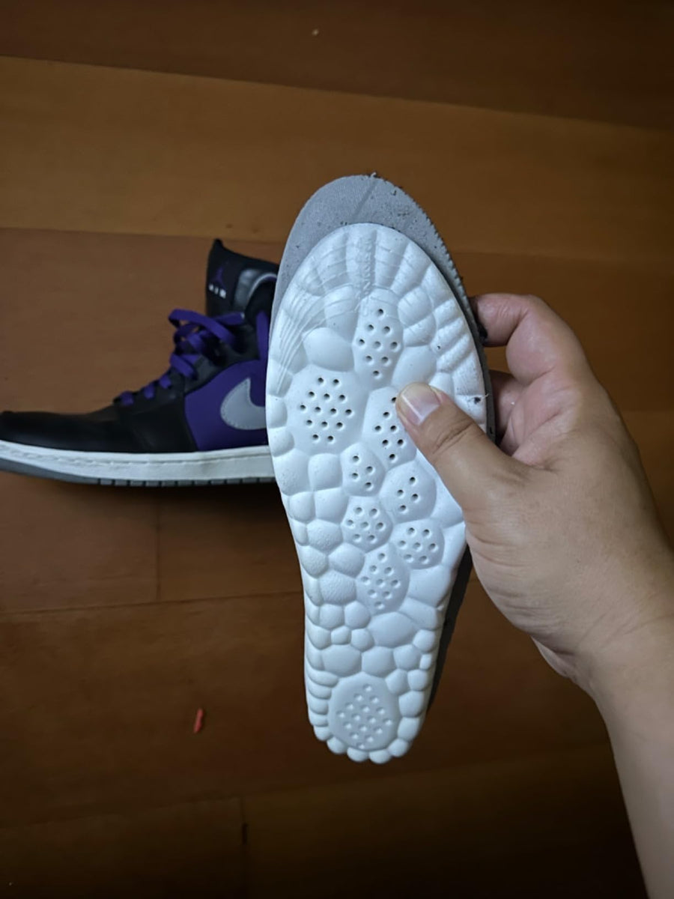
Acá era donde las baratas siempre traicionaban, así que es lo primero que miramos. La Cloud 5D está hecha de una espuma con memoria térmica sobre una base firme: se adapta a tu pie con el calor y vuelve a su forma cuando te la sacás, en vez de quedar aplastada. El fabricante habla de 12 a 18 meses de uso sin degradarse; las reseñas de gente que las usa hace meses dicen lo mismo: “siguen amortiguando como el primer día”.
08El calzado
Entraron en los zapatos que ya uso
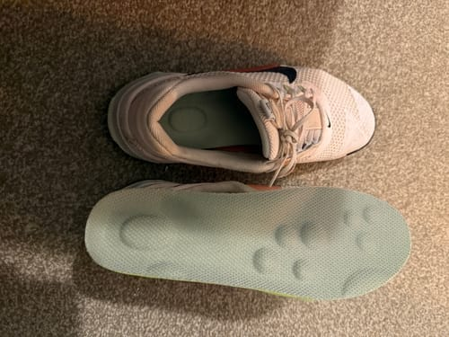
Nadie va a cambiar todos sus zapatos. Las Cloud 5D vienen en talles del 35 al 46 y son recortables: sacás la plantilla de fábrica, apoyás la nueva encima como molde, recortás la punta si hace falta y listo, en un minuto. Zapatillas, zapatos de trabajo, botas de seguridad, el calzado blanco del hospital.
Un consejo que repiten las que las usan hace tiempo: cambiar la plantilla de zapato todas las mañanas cansa al cuarto día. Un par para cada calzado que usás de verdad, y te olvidás.
09Quién está detrás
No es una marca “de internet”: es la plantilla más vendida de Argentina
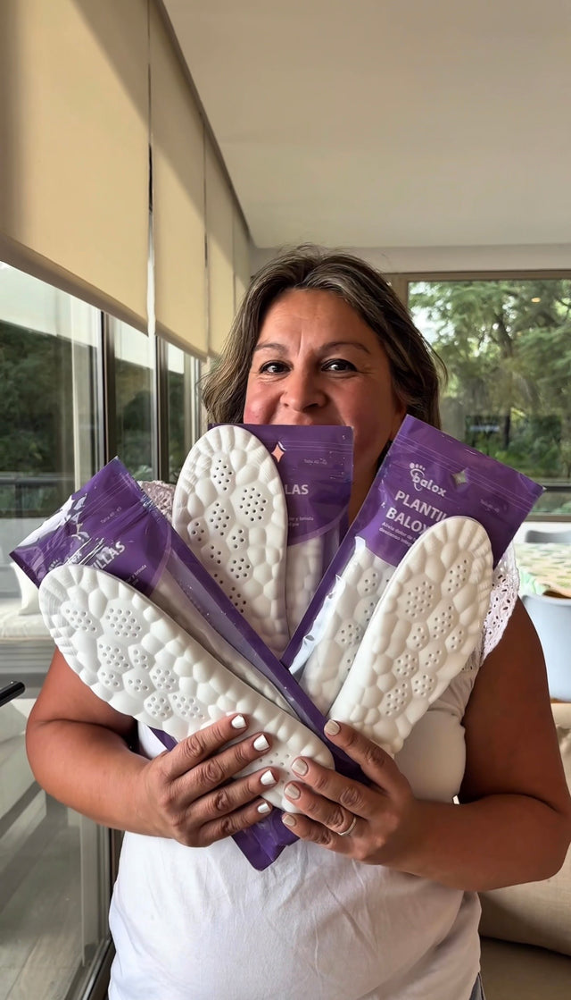
Las Cloud-Comfy 5D las vende Balox, una empresa argentina especializada en productos para el pie, con tienda oficial en Mercado Libre y más de 100.000 pares vendidos. Es la plantilla con más ventas del país, con 4,9 de puntuación y miles de reseñas, y la primera con doble amortiguación 5D y memoria térmica registrada en el INPI.
Cada compra incluye un e-book de ejercicios para el dolor plantar escrito por un podólogo de la UBA, y la empresa cambia el talle gratis si elegiste mal. Eso, para una plantilla, dice más que cualquier publicidad.
10La cuenta
La que funcionó costó menos que todo lo que no funcionó
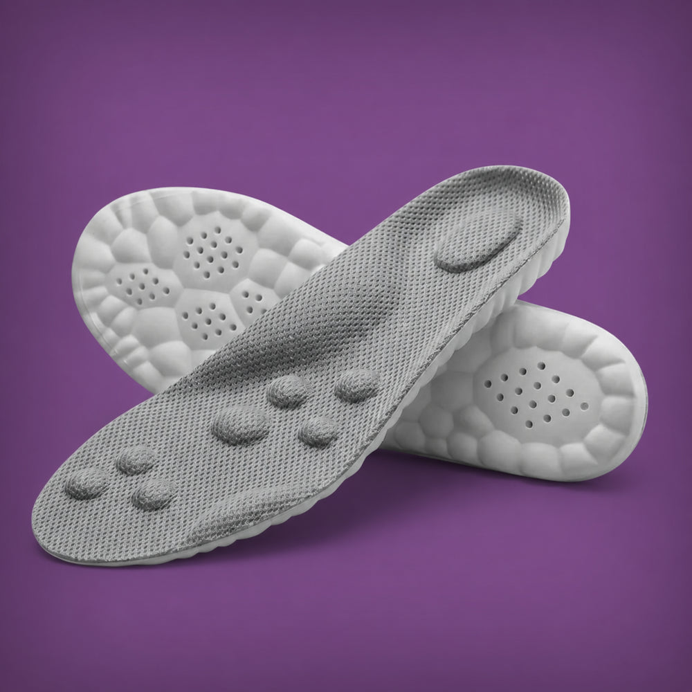
Hagamos la cuenta que hicieron las lectoras: zapatillas “cómodas” $180.000, plantillas a medida $250.000, masajeador $90.000, plantillas de gel y cremas que ya ni se cuentan. Más de $500.000 en cosas que no ayudaron.
Un par de Cloud 5D cuesta $29.990 hoy en la web del fabricante, y comprando tres o cinco pares (uno por calzado) baja hasta $16.990 cada uno, con envío gratis. Fue lo único que funcionó. Caro no es lo mismo que correcto.
La diferencia
Comparado con lo que probablemente ya compraste
En lo que importa para alguien que trabaja parado:
| Cloud-Comfy 5D | Plantillas de gel | A medida (podólogo) | |
|---|---|---|---|
| Amortiguación que no se aplasta en semanas | ✓ | ✗ | ~ |
| Relieves de masaje que reparten el apoyo | ✓ | ✗ | ✗ |
| Soporte de arco para fascitis | ✓ | ✗ | ✓ |
| Memoria térmica (se adapta a tu pie) | ✓ | ✗ | ✗ |
| Recortable, sirve para varios calzados | ✓ | ✓ | ✗ |
| Cambio de talle gratis + garantía 60 días | ✓ | ✗ | ✗ |
| Precio por par | $29.990 (menos en pack) | $10.000–$20.000 | $250.000 o más |
Comparación basada en la información pública de plantillas de gel de venta libre y en precios de referencia de plantillas a medida en Argentina (octubre 2026). Las plantillas a medida con indicación médica son otra categoría: si tenés una patología diagnosticada, seguí la indicación de tu profesional.
Lo que dicen los números
Qué contestaron quienes las usan
Datos del panel de clientes de la marca (encuesta a compradores con uso de más de 30 días):
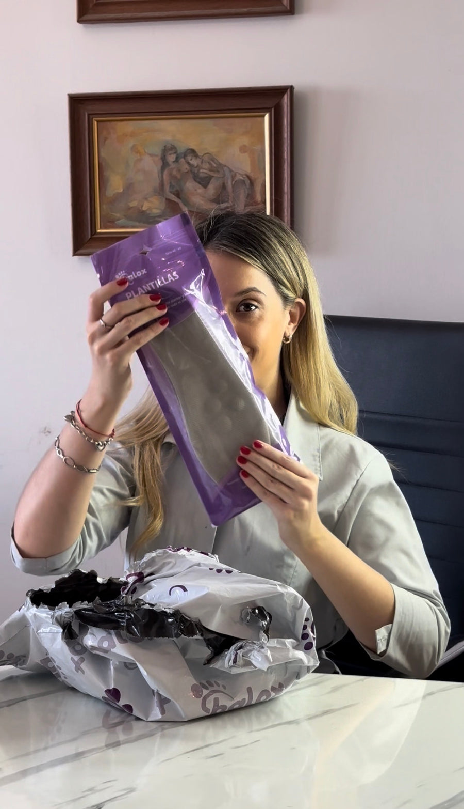
El 97% dijo que el dolor de talón desapareció por completo.
Panel de clientes BaloxEl 90% dijo que puede usar sus zapatos de trabajo y botas todo el día.
Panel de clientes BaloxEl 96% dijo que “revivieron” sus zapatos y los hicieron más cómodos que cualquier otro.
Panel de clientes BaloxEl 100% notó resultados en los primeros 3 días de uso.
Panel de clientes Balox
Lo que no dice ni el fabricante ni esta nota: una plantilla no es un tratamiento médico. Si tenés dolor intenso, hinchazón, diabetes o una lesión diagnosticada, consultá a un profesional antes de cambiar tu calzado.
Lo que cuentan los que trabajan parados
Reseñas de compradores, tal cual las escribieron en la tienda oficial de la marca.
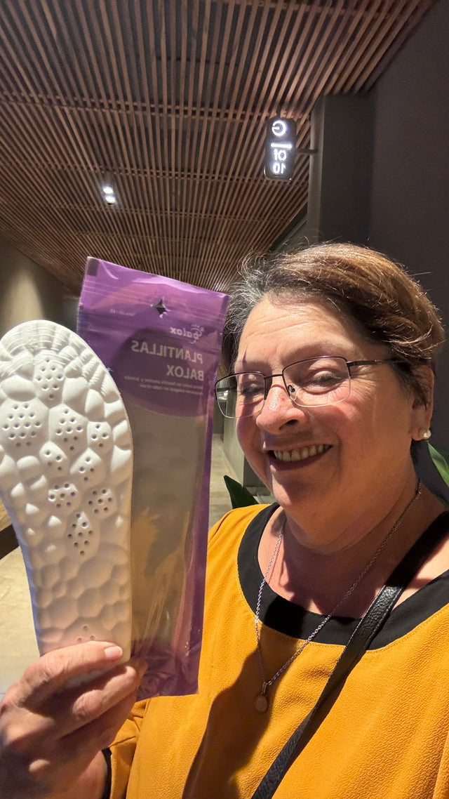
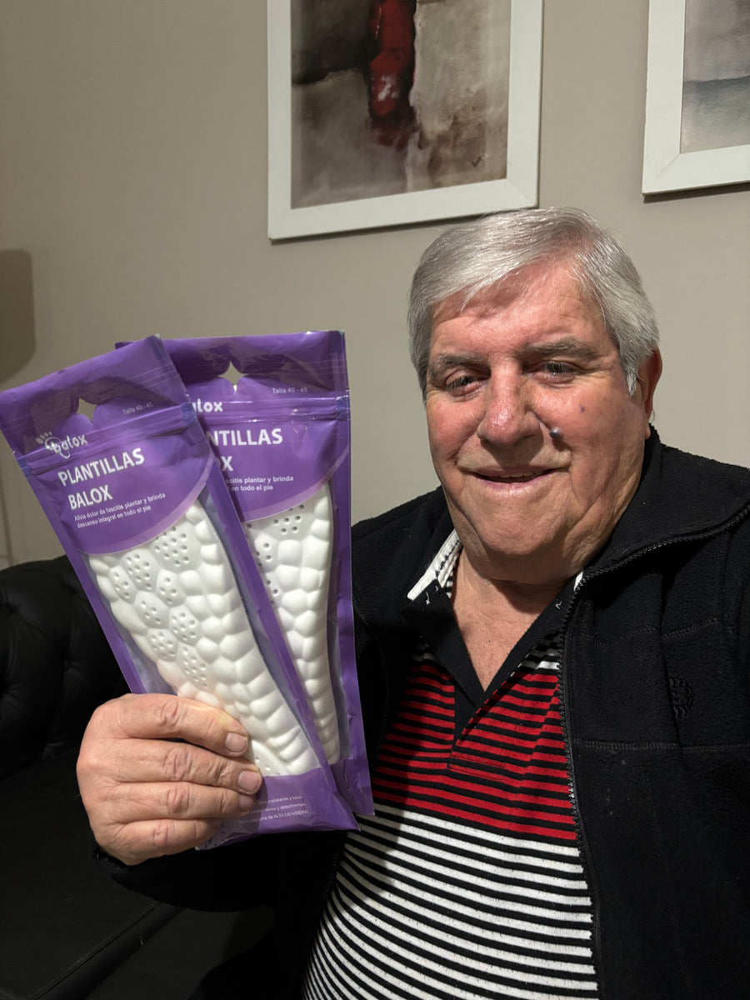
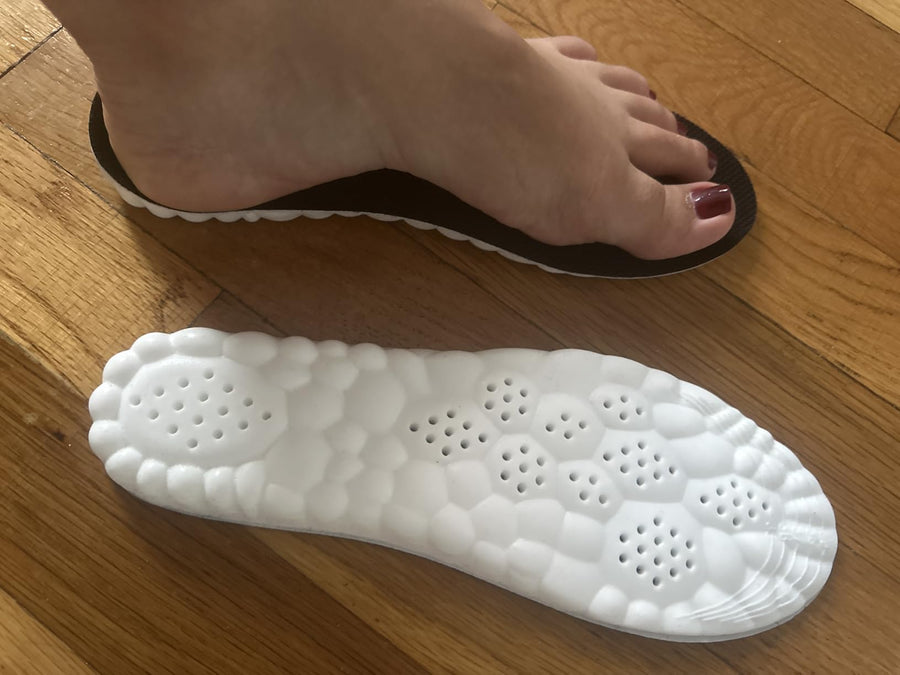
“Las amé! Empecé a trabajar en atención al público, mucho tiempo parada, caminando… Tengo fascitis plantar y los pies llegaban destruidos. Desde que uso las plantillas es una historia nueva, más comodidad al caminar, nada del dolor terrible con el que volvía a casa.”
“Trabajo muchas horas de pie, y mis tobillos se hinchaban muchísimo al final del día. Desde que uso estas plantillas, noto que la hinchazón baja notablemente. No es solo comodidad: es alivio real para mis piernas.”
“Compré por segunda vez para tener más pares disponibles. También las usa mi marido y mi hija. Son excelentes, cómo alivian mi dolor de pies. ¡Soporto más tiempo mis calzados!”
“La ficha decía “deportiva” y pensé que no serían útiles para mis zapatos de vestir o de trabajo. Pero funcionan igual de bien: amortiguan, alivian y dan soporte aunque no estés corriendo. Las uso desde temprano hasta la noche.”
“Las uso todos los días, incluso para trotar suave. Ya pasaron meses y siguen amortiguando como el primer día. Antes, las plantillas que compraba al poco tiempo se aplastaban y perdían firmeza. Estas todavía me sorprenden. Vale cada peso.”
Se venden en la web del fabricante (y hoy están con descuento por cantidad)
Al momento de publicar esta nota, el par está con 60% de descuento sobre el precio de lista, y comprando 3 o 5 pares (uno por calzado) el precio por par baja todavía más y el envío es gratis. Es la misma oferta que ve cualquiera que entra al sitio, no un precio especial para lectores.
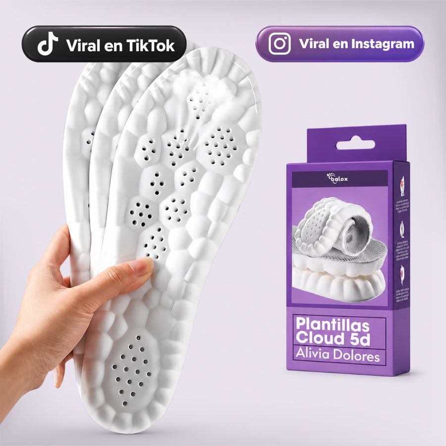
Plantillas Cloud-Comfy 5D
Talles 35 a 46 · Gris o negro · Recortables
$75.900$29.990por par · 3 pares a $21.990 c/u · 5 pares a $16.990 c/u
- Envío gratis comprando 3 pares o más (a todo el país)
- 3 cuotas sin interés
- Descuento extra pagando por transferencia bancaria
- Cambio de talle gratis durante 60 días, sin preguntas
- Garantía de 60 días: si no te funcionan, te devuelven el dinero
- De regalo: e-book de ejercicios para el dolor plantar, escrito por un podólogo de la UBA
La oferta de hoy termina en --:--:--
Al entrar, elegí la cantidad de pares (el descuento se aplica solo), después el talle y el color de cada par. El descuento extra se aplica eligiendo transferencia al pagar.
¿Qué talle pido? ¿Y si estoy entre dos talles?
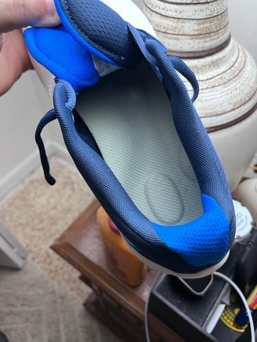
Pedí tu talle habitual de calzado. Vienen en rangos (35-36, 37-38, 39-40, 41-42, 43-44, 45-46) y son recortables: si quedás entre dos, pedí el más grande y recortá la punta siguiendo las guías del reverso. Si igual te equivocás, el cambio es gratis dentro de los 60 días.
¿Sirven para fascitis plantar o espolón?
Es el caso para el que más las compran. El soporte de arco mantiene el pie en posición neutra y reduce la tensión sobre la fascia; la amortiguación baja el impacto en el talón. La mayoría nota alivio desde el primer día y una mejora progresiva en 1 a 2 semanas. Si tenés un diagnóstico, usalas como complemento de lo que te indicó tu profesional.
¿Entran en botas de seguridad y en el calzado blanco del hospital?
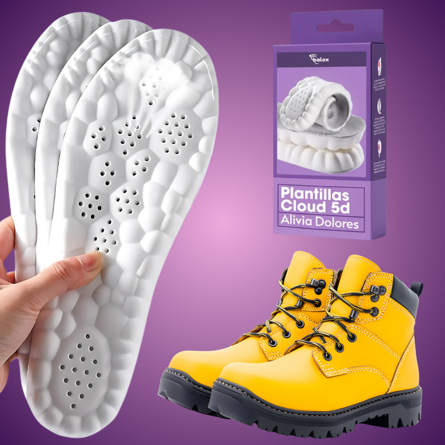
Sí. Sacás la plantilla de fábrica y ponés la Cloud 5D en su lugar; tienen 2 cm de espesor y no te aprietan los dedos contra la puntera. Las usan operarios, enfermeras, mozos y gente que camina todo el día en atención al público.
¿Cuánto duran y cómo se lavan?
El fabricante indica 12 a 18 meses de uso diario sin degradarse, gracias a la base firme y la memoria térmica. Se lavan a mano con agua tibia y jabón neutro, y se dejan secar a la sombra.
¿Cuánto tarda en llegar?
Sale del depósito del fabricante en 24 a 48 horas hábiles. En CABA y GBA suele llegar entre 24 y 72 horas; al interior, de 3 a 6 días hábiles. Comprando 3 pares o más, el envío es gratis a todo el país.
Garantía de 60 días · Cambio de talle gratis · 3 cuotas sin interés